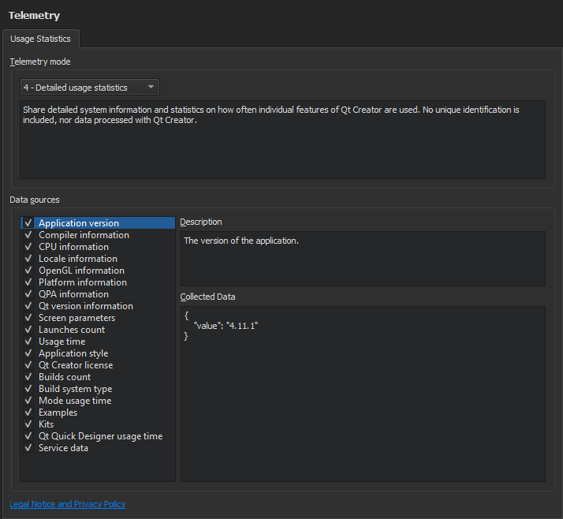

Collecting Usage Statistics
The telemetry plugin uses the KUserFeedback framework to collect the usage data. The library has been designed from the user data privacy point of view and Qt Creator respects the same privacy rules.
The data is transmitted to the backend storage using an encrypted connection. The storage is located in the same Heroku backend as the Qt installer backend. Physically, data is stored in the Amazon cloud.
Specifying Telemetry Settings
To determine what data is transmitted to the backend storage:
- Select Tools > Options > Telemetry > Usage Statistics.

- In the Telemetry mode list, select the mode that determines what kind of data is collected.
- In the Data sources list, select entries to view exactly what data is collected. Deselect check boxes for data that you do not want to transmit to the backend storage.